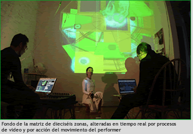
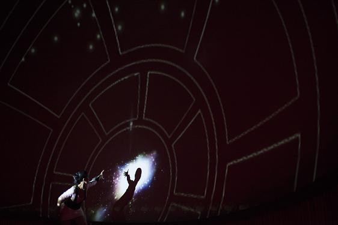

Proyecto fulldome / performance sonora
Performance inmersiva que explora la voz, el lenguaje y el sonido como material espacial en entornos fulldome.
Speak Dome es una performance audiovisual que investiga la voz y el lenguaje como materiales espaciales en un entorno inmersivo. La obra sitúa el sonido en el centro de la experiencia, desplazando la primacía de la imagen hacia una dimensión acústica expandida.
A través de la emisión vocal, el procesamiento sonoro y su relación con la proyección fulldome, la pieza construye un espacio donde la voz se transforma en arquitectura perceptiva, generando una experiencia que articula cuerpo, lenguaje y tecnología.
La obra permite abordar el sonido como elemento estructurante en experiencias inmersivas, así como explorar la relación entre voz, espacialización y percepción.
También habilita el trabajo sobre prácticas performáticas en tiempo real, incorporando el lenguaje y la emisión vocal como herramientas de creación dentro del entorno fulldome.
Speak Dome se inscribe en un conjunto de prácticas que exploran la performance audiovisual en entornos inmersivos, articulando sonido, cuerpo y tecnología en un mismo dispositivo.
Dentro del archivo, la obra amplía el campo de exploración del fulldome hacia lo sonoro y lo lingüístico, complementando otras piezas centradas en la imagen o la visualización.
No existe registro audiovisual disponible.
